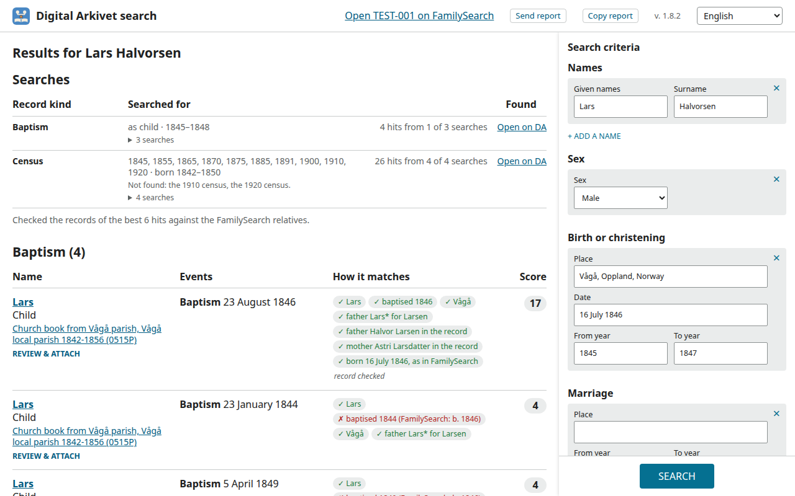
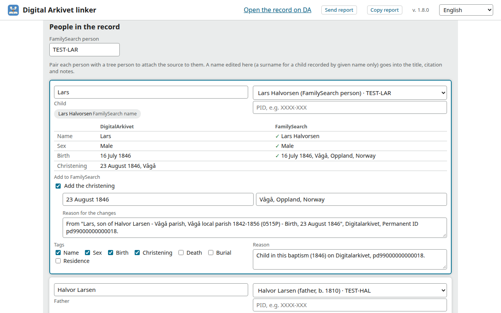

Why it helps
Norway's church books, censuses and emigrant lists are online, free, at Digitalarkivet. Finding one ancestor there is slow work: the records are in old Norwegian, a name can be spelled a dozen ways (Pedersdatter, Pedersdtr., Persdatter), and a family took the name of each farm it lived on. This extension does the searching from the person in your tree, and writes the source for you.
How it works
Search from your tree
On a person's page in FamilySearch, click Digital Arkivet under Search Records. It looks for their baptism, confirmation, marriages, children's baptisms, censuses, emigration and burial.
See the best matches
Every hit says why it matches: ✓ agrees with your tree, ≈ close (another spelling, a year off), ✗ disagrees. The best hits are checked against the people in the record itself.
Review, then attach
Review & Attach shows the record, a source with a full citation, and the record's people paired with your tree. One click adds the source and attaches it to each of them.


Nothing is saved on FamilySearch until you click to save it. Always look at the record, and the scanned page when there is one, before you attach it: old handwriting is hard to read, and transcriptions vary.
What you need
- A free FamilySearch account, and ancestors in its Family Tree who were born or lived in Norway
- A desktop or laptop computer (Windows, Mac or Linux): phones and tablets can't run browser extensions
- Chrome, Brave, Opera, Firefox or LibreWolf (Safari and Microsoft Edge aren't supported)
Digitalarkivet needs no account.
Install
Chrome, Brave and Opera install it from the Chrome Web Store, Firefox and LibreWolf from Firefox Add-ons. The store keeps it up to date.
| Browser | Where | How |
|---|---|---|
| Chrome | Chrome Web Store | Click Add to Chrome. |
| Brave | Chrome Web Store | Click Add to Brave. |
| Opera | Chrome Web Store | Opera first offers its own Install Chrome Extensions helper: add it, then the extension. |
| Firefox | Firefox Add-ons | Firefox 140 or later. Click Add to Firefox. |
| LibreWolf | Firefox Add-ons | Click Add to Firefox. LibreWolf signs you out of every site when it closes; to stay signed in to FamilySearch, go to Settings → Privacy & Security → Cookies and Site Data → Manage Exceptions, and allow https://www.familysearch.org. |
Then pin the extension's icon, the blue book, from the puzzle-piece button on the toolbar. If one of its pages shows Allow access, click it once.
Install from GitHub
For the technically inclined who want a new release before the stores have it. You load the extension from a folder on your computer, as developers do. It's the same extension the stores have, but it doesn't update itself: it tells you when there's a new release, and you install it the same way.
- Download
arkivet2fs-X.Y.Z.zip(1.8.0 or later) from the latest release. The same file works in every browser. - Unzip it into a folder named just
arkivet2fs, with no version in the name, somewhere it can stay, such as your home folder. On Linux or macOS, in a terminal:unzip -o ~/Downloads/arkivet2fs-1.8.1.zip -d ~/arkivet2fs
On Windows, in PowerShell:Expand-Archive -Force "$HOME\Downloads\arkivet2fs-1.8.1.zip" "$HOME\arkivet2fs"
Either one makes the folder if it isn't there and replaces its files if it is. With your file manager instead, change the folder it suggests (arkivet2fs-1.8.1) toarkivet2fs. Use the same folder for every update and don't move it: the browser loads the extension from it and keeps your data by its place.
Chrome, Brave, Opera
- Open
chrome://extensions(Brave:brave://extensions, Opera:opera://extensions). - Turn on Developer mode, at the top right.
- Click Load unpacked and choose the
arkivet2fsfolder. - Pin the icon from the puzzle-piece (Opera: cube) button on the toolbar.
An Errors button on the extension's card about background.scripts can be ignored: that line is for Firefox.
Firefox 140+, LibreWolf
- Open
about:debuggingand choose This Firefox. - Click Load Temporary Add-on… and pick
manifest.jsonin thearkivet2fsfolder. - Pin the icon from the puzzle-piece button on the toolbar.
Firefox removes a temporary add-on when it closes, so load it again after each restart (what you searched and attached is kept). In LibreWolf, also allow FamilySearch's cookies as in the table above.
To update, unzip the new release into the same arkivet2fs folder with the same command (with the new version in the file's name), then click the reload button on the extension's card (Firefox: Reload in about:debugging). The extension's Updates page, from the version number at the top of its pages, can download the new release for you and checks its signature first. When your browser's store has it, you can remove this copy and install that one instead (remove it first, or you'll have two). In Chrome, Brave and Opera the store copy starts with an empty list of recent people and attached records; nothing on FamilySearch changes. The README has more detail.
Your first record
- Sign in to FamilySearch in the same browser.
- Open an ancestor born in Norway in the Family Tree.
- In the Search Records panel on the right, below Google, click Digital Arkivet.
- Wait while it searches; the best matches come first.
- Click Review & Attach on a hit and read the record. Every field can be corrected first: the source's title, citation and notes, a person's name, which tree person each one is paired with, and the facts to add. When it's right, click Create source and attach.
The user guide goes through each task: census households, entries in two church books, adding facts to the tree, people not in the tree yet.
Your privacy
No account, no tracking, no analytics. The extension works in your own browser, on Digitalarkivet and FamilySearch, as you would by hand, and never sees your FamilySearch password. Your searches and records stay in your browser. Nothing goes to the developer unless you send a report yourself.
Questions and feedback
The extension's pages have a Send report button at the top. Write what happened and send it, privately, to the developer: something that went wrong, something confusing, or an idea. You can read and edit the whole report first; add your e-mail address only if you'd like an answer. Every report is read, but fixes come in updates now and then, each fixing several problems, so an answer or a fix can take a while.
Or open an issue on GitHub (public).
Testers wanted
The extension is new. If you have Norwegian ancestors in FamilySearch's tree, try it on your own family and tell us what works and what doesn't, with Send report. Every report is read.
På norsk
Digitalarkivet til FamilySearch er en gratis utvidelse for nettleseren til slektsforskning i norske kilder. Fra en person i slektstreet i FamilySearch søker den i Digitalarkivet etter dåp, konfirmasjon, ekteskap, barnas dåp, folketellinger, utvandring og begravelse, rangerer treffene og forklarer hvorfor hvert treff passer. Posten du velger, legges til i FamilySearch som en kilde med kildehenvisning, knyttet til personene den nevner.
Utvidelsen er på bokmål, nynorsk og engelsk. Installer den fra Chrome Web Store (Chrome, Brave, Opera) eller Firefox Add-ons (Firefox, LibreWolf). Den er et uavhengig prosjekt, uten tilknytning til FamilySearch eller Arkivverket.